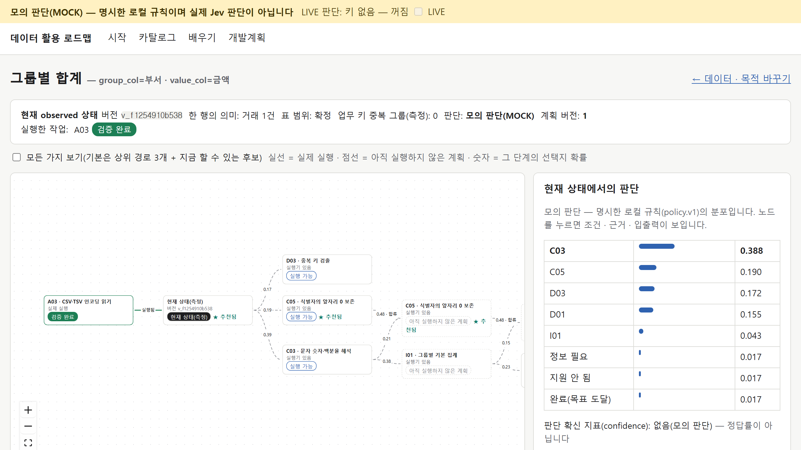
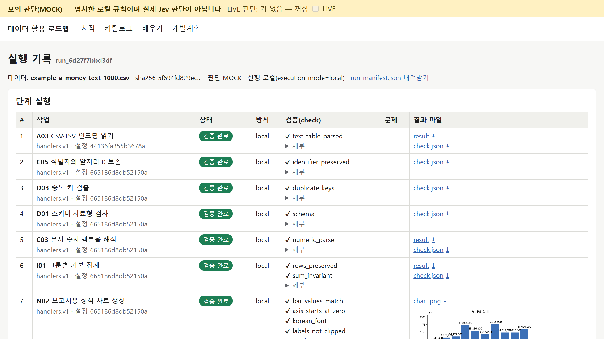

자동화는 「정해진 순서」는 잘 한다. 그런데 「지금 무엇부터 할지」는 여전히 사람이 정한다. 그 판단을 확률로 맡기는 아이디어를 파일 하나로 봅니다.
| 거래번호 | 부서 | 사용처 | 금액 |
|---|---|---|---|
| T0001 | 총무팀 | 행사 대관 | 98,300원 |
| T0002 | 인사팀 | 출장 교통비 | 128,700원 |
| T0003 | 재무팀 | 출장 교통비 | 29,700원 |
| … 1,000행 · 부서 10곳 (가상 자료 example_a_money_text_1000.csv) | |||
| 받는 것 — 지금 먼저 할 작업 | 확률 |
|---|---|
| C03 글자 숫자를 숫자로 | 0.70 |
| D03 중복 찾기 | 0.20 |
| I01 부서별 합계 | 0.10 |
교육용 예시 숫자다 — 실제 Jev 응답이 아니다. 질문 모양은 셋: 하나 고르기(Choice) · 수준 매기기(Score) · 예/아니오(Noul).

모의 판단(MOCK) 앱의 로컬 규칙이 만든 분포 — 실제 Jev 응답 · 성능이 아니다. 해 보기: 파일 올리기 → examples\example_a_money_text_1000.csv · 업무 키 = 거래번호.
| 1000행 첫 판단의 경로 | 단계마다의 선택지 확률 (끝 = 목표 도달도 한 단계) | 경로 추천 점수 |
|---|---|---|
| ★ C05 → C03 → I01 → 끝 | 0.1897 · 0.4787 · 0.4762 · 0.2756 | 0.3304 |
| C03 → I01 → 끝 | 0.3879 · 0.3774 · 0.2349 | 0.3252 |

모의 판단(MOCK) 변환 · 합계 · 검증은 실제 파이썬 — 부서 10곳 · 합계 148,982,900원(CSV 를 따로 더한 값과 같음). 답이 바뀐 건 AI 가 배워서가 아니라 건넨 상황 메모가 바뀌어서다.
| 업무 | Jev 에게 맡길 좁은 판단 | 코드 · 다른 도구가 할 일 |
|---|---|---|
| 상담 문의 분류 | 환불 · 기술 · 이용안내 중 담당 경로 고르기 | 티켓 저장 · 담당자 배정 |
| 자유 의견 정리 | 미리 정한 개선 의견 범주 고르기 | 집계 · 검토 대상 표시 · 보고서 |
| 보고서 검수 | 근거가 주장을 뒷받침하는지 평가 | 수치 · 합계 · 분모 계산 검증 |
| 엑셀 파일 처리 | 153개 작업 카드 중 지금 할 작업 고르기 | 변환 · 집계 · 차트 · 결과 검증 |
data-roadmap\run.bat 더블클릭. 출처: TypeSafe 공식 문서. 앱 캡처는 모의 판단이며 실제 Jev 호출은 검증하지 않았다.